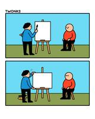

0
"Advanced AI models appear willing to deploy nuclear weapons without the same reservations humans have when put into simulated geopolitical crises," reports New Scientist:
Kenneth Payne at King's College London set three leading large language models — GPT-5.2, Claude Sonnet 4 and Gemini 3 Flash — against each other in simulated war games. The scenarios involved intense international standoffs, including border disputes, competition for scarce resources and existential threats to regime survival.
The AIs were given an escalation ladder, allowing them to choose actions ranging from diplomatic protests and complete surrender to full strategic nuclear war... In 95 per cent of the simulated games, at least one tactical nuclear weapon was deployed by the AI models.
"The nuclear taboo doesn't seem to be as powerful for machines [as] for humans," says Payne.
What's more, no model ever chose to fully accommodate an opponent or surrender, regardless of how badly they were losing. At best, the models opted to temporarily reduce their level of violence. They also made mistakes in the fog of war: accidents happened in 86 per cent of the conflicts, with an action escalating higher than the AI intended to, based on its reasoning...
OpenAI, Anthropic and Google, the companies behind the three AI models used in this study, didn't respond to New Scientist's request for comment.
The article includes this comment from Tong Zhao, a senior fellow in the Nuclear Policy Program at the Carnegie Endowment for Peace think tank. "It is possible the issue goes beyond the absence of emotion. More fundamentally, AI models may not understand 'stakes' as humans perceive them."
Thanks to long-time Slashdot reader Tufriast for sharing the article.
Read more of this story at Slashdot.
"Anthropic may have lost out on doing business with the US government," reports Engadget, "but it's gained enough popularity to earn the number one spot on the App Store's Top Free Apps leaderboard."
Anthropic's Claude AI assistant had already leaped to the #2 slot on Apple's chart by late Friday," CNBC reported Saturday:
The rise in popularity suggests that Anthropic is benefiting from its presence in news headlines, stemming from its refusal to have its models used for mass domestic surveillance or for fully autonomous weapons... OpenAI's ChatGPT sat at No. 1 on the App Store rankings on Saturday, while Google's Gemini was at No. 3... On Jan. 30, [Claude] was ranked No. 131 in the U.S., and it bounced between the top 20 and the top 50 for much of February, according to data from analytics company Sensor Tower... [And Friday night, for 85.3 million followers] pop singer Katy Perry posted a screenshot of Anthropic's Pro subscription for consumers, with a heart superimposed over it.
Sunday Engadget reported Anthropic's "very public spat" with the Pentagon "led to a wave of user support that finally allowed Claude to dethrone OpenAI's ChatGPT on the App Store as the most downloaded free app." .
Friday Anthropic posted "We are deeply grateful to our users, and to the industry peers, policymakers, veterans, and members of the public who have voiced their support in recent days. Thank you. "
Read more of this story at Slashdot.
Engadget reports:
In a lengthy post on Truth Social on February 27, President Trump ordered all federal agencies to "immediately cease all use of Anthropic's technology" following strong disagreements between the Department of Defense and the AI company. A few hours later, the U.S. conducted a major air attack on Iran with the help of Anthropic's AI tools, according to a report from The Wall Street Journal.
Even Trump's post noted there would be a six-month phase-out for Anthropic's technology (adding that Anthropic "better get their act together, and be helpful during this phase out period, or I will use the Full Power of the Presidency to make them comply, with major civil and criminal consequences to follow.")
Anthropic's Claude technology was also used by the U.S. military less than two months ago in its operation in Venezuela — reportedly making them the first AI developer known to be used in a classified U.S. War Department operation. The Wall Street Journal reported Anthropic's technology found its way into the mission through Anthropic's contract with Palintir.
Read more of this story at Slashdot.
"Podcasts have officially overtaken AM/FM talk radio as the more popular medium for spoken-word audio in the United States," reports TechCrunch, citing Edison Research's Share of Ear survey:
The researchers have tracked these statistics over the last decade, and almost always, the percentage of time people spent listening to podcasts increased, while their time with spoken radio broadcasts decreased. For the first time this year, podcasts eclipsed spoken-word radio with 40% of listening time, as opposed to 39% for radio...
We checked with Edison to see if these statistics include video podcasts, and they do. But the need to clarify that question points to the undeniable growing prevalence of video podcasts, hosted on platforms like Spotify and YouTube, which marks another key trend in podcasting... YouTube said that viewers watched 700 million hours of podcasts each month in 2025 on living room devices, like TVs, up from 400 million the previous year.
Read more of this story at Slashdot.
In a 9,000-word expose, a writer for Harper's visited San Francisco's young entrepreneurs in September to mockingly profile "tech's new generation and the end of thinking."
There's Cluely founder Roy Lee. ("His grand contribution to the world was a piece of software that told people what to do.") And the Rationalist movement's Scott Alexander, who "would probably have a very easy time starting a suicide cult..."
Alexander's relationship with the AI industry is a strange one. "In theory, we think they're potentially destroying the world and are evil and we hate them," he told me. In practice, though, the entire industry is essentially an outgrowth of his blog's comment section... "Many of them were specifically thinking, I don't trust anybody else with superintelligence, so I'm going to create it and do it well." Somehow, a movement that believes AI is incredibly dangerous and needs to be pursued carefully ended up generating a breakneck artificial arms race.
There's a fascinating story about teenaged founder Eric Zhu (who only recently turned 18):
Clients wanted to take calls during work hours, so he would speak to them from his school bathroom. "I convinced my counselor that I had prostate issues... I would buy hall passes from drug dealers to get out of class, to have business meetings." Soon he was taking Zoom calls with a U.S. senator to discuss tech regulation... Next, he built his own venture-capital fund, managing $20 million. At one point cops raided the bathroom looking for drug dealers while Eric was busy talking with an investor. Eventually, the school got sick of Eric's misuse of the facilities and kicked him out. He moved to San Francisco.
Eric made all of this sound incredibly easy. You hang out in some Discord servers, make a few connections with the right people; next thing you know, you're a millionaire... Eric didn't think there was anything particularly special about himself. Why did he, unlike any of his classmates, start a $20 million VC fund? "I think I was just bored. Honestly, I was really bored." Did he think anyone could do what he did? "Yeah, I think anyone genuinely can."
The article concludes Silicon Valley's investors are rewarding young people with "agency". Although "As far as I could tell, being a highly agentic individual had less to do with actually doing things and more to do with constantly chasing attention online." Like X.com user Donald Boat, who successfully baited Sam Altman into buying him a gaming PC in "a brutally simplified miniature of the entire VC economy." (After which "People were giving him stuff for no reason except that Altman had already done it, and they didn't want to be left out of the trend.")
Shortly before I arrived at the Cheesecake Factory, [Donald Boat] texted to let me know that he'd been drinking all day, so when I met him I thought he was irretrievably wasted. In fact, it turned out, he was just like that all the time... He seemed to have a constant roster of projects on the go. He'd sent me occasional photos of his exploits. He went down to L.A. to see Oasis and ended up in a poker game with a group of weapons manufacturers. "I made a bunch of jokes about sending all their poker money to China," he said, "and they were not pleased...."
"I don't use that computer and I think video games are a waste of time. I spent all the money I made from going viral on Oasis tickets." As far as he was concerned, the fact that tech people were tripping over themselves to take part in his stunt just confirmed his generally low impression of them. "They have too much money and nothing going on..." Ever since his big viral moment, he'd been suddenly inundated with messages from startup drones who'd decided that his clout might be useful to them. One had offered to fly him out to the French Riviera.
The author's conclusion? "It did not seem like a good idea to me that some of the richest people in the world were no longer rewarding people for having any particular skills, but simply for having agency."
Read more of this story at Slashdot.
Saturday afternoon Sam Altman announced he'd start answering questions on X.com about OpenAI's work with America's Department of War — and all the developments over the past few days. (After that department's negotions had failed with Anthropic, they announced they'd stop using Anthropic's technology and threatened to designate it a "Supply-Chain Risk to National Security". Then they'd reached a deal for OpenAI's technology — though Altman says it includes OpenAI's own similar prohibitions against using their products for domestic mass surveillance and requiring "human responsibility" for the use of force in autonomous weapon systems.)
Altman said Saturday that enforcing that "Supply-Chain Risk" designation on Anthropic "would be very bad for our industry and our country, and obviously their company. We said [that] to the Department of War before and after. We said that part of the reason we were willing to do this quickly was in the hopes of de-esclation.... We should all care very much about the precedent... To say it very clearly: I think this is a very bad decision from the Department of War and I hope they reverse it. If we take heat for strongly criticizing it, so be it."
Altman also said that for a long time, OpenAI was planning to do "non-classified work only," but this week found the Department of War "flexible on what we needed..."
Sam Altman: The reason for rushing is an attempt to de-escalate the situation. I think the current path things are on is dangerous for Anthropic, healthy competition, and the U.S. We negotiated to make sure similar terms would be offered to all other AI labs.
I know what it's like to feel backed into a corner, and I think it's worth some empathy to the Department of War. They are... a very dedicated group of people with, as I mentioned, an extremely important mission. I cannot imagine doing their work. Our industry tells them "The technology we are building is going to be the high order bit in geopolitical conflict. China is rushing ahead. You are very behind." And then we say "But we won't help you, and we think you are kind of evil." I don't think I'd react great in that situation. I do not believe unelected leaders of private companies should have as much power as our democratically elected government. But I do think we need to help them.
Question: Are you worried at all about the potential for things to go really south during a possible dispute over what's legal or not later on and be deemed a supply chain risk...?
Sam Altman: Yes, I am. If we have to take on that fight we will, but it clearly exposes us to some risk. I am still very hopeful this is going to get resolved, and part of why we wanted to act fast was to help increase the chances of that...
Question: Why the rush to sign the deal ? Obviously the optics don't look great.
Sam Altman: It was definitely rushed, and the optics don't look good. We really wanted to de-escalate things, and we thought the deal on offer was good.
If we are right and this does lead to a de-escalation between the Department of War and the industry, we will look like geniuses, and a company that took on a lot of pain to do things to help the industry. If not, we will continue to be characterized as as rushed and uncareful. I don't where it's going to land, but I have already seen promising signs. I think a good relationship between the government and the companies developing this technology is critical over the next couple of years...
Question: What was the core difference why you think the Department of War accepted OpenAI but not Anthropic?
Sam Altman: [...] We believe in a layered approach to safety--building a safety stack, deploying FDEs [embedded Forward Deployed Engineers] and having our safety and alignment researcher involved, deploying via cloud, working directly with the Department of War. Anthropic seemed more focused on specific prohibitions in the contract, rather than citing applicable laws, which we felt comfortable with. We feel that it it's very important to build safe system, and although documents are also important, I'd clearly rather rely on technical safeguards if I only had to pick one...
I think Anthropic may have wanted more operational control than we did...
Question: Were the terms that you accepted the same ones Anthropic rejected?
Sam Altman: No, we had some different ones. But our terms would now be available to them (and others) if they wanted.
Question: Will you turn off the tool if they violate the rules?
Sam Altman: Yes, we will turn it off in that very unlikely event, but we believe the U.S. government is an institution that does its best to follow law and policy. What we won't do is turn it off because we disagree with a particular (legal military) decision. We trust their authority.
Questions were also answered by OpenAI's head of National Security Partnerships (who at one point posted that they'd managed the White House response to the Snowden disclosures and helped write the post-Snowden policies constraining surveillance during the Obama years.) And they stressed that with OpenAI's deal with Department of War, "We control how we train the models and what types of requests the models refuse."
Question: Are employees allowed to opt out of working on Department of War-related projects?
Answer: We won't ask employees to support Department of War-related projects if they don't want to.
Question: How much is the deal worth?
Answer: It's a few million $, completely inconsequential compared to our $20B+ in revenue, and definitely not worth the cost of a PR blowup. We're doing it because it's the right thing to do for the country, at great cost to ourselves, not because of revenue impact...
Question: Can you explicitly state which specific technical safeguard OpenAI has that allowed you to sign what Anthropic called a 'threat to democratic values'?
Answer: We think the deal we made has more guardrails than any previous agreement for classified AI deployments, including Anthropic's. Other AI labs (including Anthropic) have reduced or removed their safety guardrails and relied primarily on usage policies as their primary safeguards in national security deployments. Usage policies, on their own, are not a guarantee of anything. Any responsible deployment of AI in classified environments should involve layered safeguards including a prudent safety stack, limits on deployment architecture, and the direct involvement of AI experts in consequential AI use cases. These are the terms we negotiated in our contract.
They also detailed OpenAI's position on LinkedIn:
Deployment architecture matters more than contract language. Our contract limits our deployment to cloud API. Autonomous systems require inference at the edge. By limiting our deployment to cloud API, we can ensure that our models cannot be integrated directly into weapons systems, sensors, or other operational hardware...
Instead of hoping contract language will be enough, our contract allows us to embed forward deployed engineers, commits to giving us visibility into how models are being used, and we have the ability to iterate on safety safeguards over time. If our team sees that our models aren't refusing queries they should, or there's more operational risk than we expected, our contract allows us to make modifications at our discretion. This gives us far more influence over outcomes (and insight into possible abuse) than a static contract provision ever could.
U.S. law already constrains the worst outcomes. We accepted the "all lawful uses" language proposed by the Department, but required them to define the laws that constrained them on surveillance and autonomy directly in the contract. And because laws can change, having this codified in the contract protects against changes in law or policy that we can't anticipate.
Read more of this story at Slashdot.
Friday was "a horrible day" for investors in Duolingo, reports Fast Company. But Friday's one-day 14% drop is just part of a longer story.
Since last May, Duolingo's stock has dropped 81%. Yes, the company faced a social media backlash that month after its CEO promised they'd become an "AI-first" company (favoring AI over human contractors). And yes, Duolingo did double its language offerings using generative AI. But more importantly, that summer OpenAI showed how easy it was to just roll your own language-learning tool from a short prompt in a GPT-5 demo, while Google built an AI-powered language-learning tool into its Translate app.
And yet, Friday Duolingo's shares dropped another 14%, after announcing good fourth quarter results but an unpopular direction for its future. Fast Company reports:
On the surface, many of the company's most critical metrics saw decent gains for the quarter, including:
— Daily Active Users: 52.7 million (up 30% year-over-year)
— Paid Subscribers: 12.2 million (up 28% year-over-year)
— Revenue: $282.9 million (up 35% year-over-year)
— Total bookings: $336.8 million (up 24% year-over-year)
The company also reported its full-year 2025 financials, revealing that for the first time in its history, it crossed the $1 billion revenue mark for a fiscal year.
But the Motley Fool explains that Duolingo's higher ad loads and repeated pushes for subscription plans "generated revenues in the short term, but made the Duolingo platform less engaging. Ergo, user growth decelerated while revenues rose." Thursday Duolingo announced a big change to address that, including moving more features into lower-priced tiers. Barron's reports:
D.A. Davidson analyst Wyatt Swanson, who rates Duolingo stock at Neutral, posited that the push to monetize "led to disgruntled users and a meaningful negative impact to 'word-of-mouth' marketing." Duolingo has guided for bookings growth between 10% and 12% in 2026, compared with the 20% rate the company would have expected to see "if we operated like we have in past years...."
If stock reaction is any indication, investors are concerned about Duolingo's new focus.
Read more of this story at Slashdot.
It started Friday when all U.S. federal agencies were ordered to "immediately cease" using Anthropic's AI technology after contract negotiations stalled when Anthropic requested prohibitions against mass domestic surveillance or fully autonomous weapons. But later Friday there were even more repercussions...
In a post to his 1.1 million followers on X.com, U.S. Secretary of War Pete Hegseth criticized Anthropic for what he called "a master class in arrogance and betrayal as well as a textbook case of how not to do business with the United States Government or the Pentagon."
Our position has never wavered and will never waver: the Department of War must have full, unrestricted access to Anthropic's models for every LAWFUL purpose in defense of the Republic... Cloaked in the sanctimonious rhetoric of "effective altruism," [Anthropic and CEO Dario Amodei] have attempted to strong-arm the United States military into submission — a cowardly act of corporate virtue-signaling that places Silicon Valley ideology above American lives. The Terms of Service of Anthropic's defective altruism will never outweigh the safety, the readiness, or the lives of American troops on the battlefield. Their true objective is unmistakable: to seize veto power over the operational decisions of the United States military. That is unacceptable...
In conjunction with the President's directive for the Federal Government to cease all use of Anthropic's technology, I am directing the Department of War to designate Anthropic a Supply-Chain Risk to National Security. Effective immediately, no contractor, supplier, or partner that does business with the United States military may conduct any commercial activity with Anthropic... America's warfighters will never be held hostage by the ideological whims of Big Tech. This decision is final.
Meanwhile, Anthrophic said on Friday that "no amount of intimidation or punishment from the Department of War will change our position." (And "We will challenge any supply chain risk designation in court.")
Designating Anthropic as a supply chain risk would be an unprecedented action — one historically reserved for US adversaries, never before publicly applied to an American company. We are deeply saddened by these developments. As the first frontier AI company to deploy models in the US government's classified networks, Anthropic has supported American warfighters since June 2024 and has every intention of continuing to do so. We believe this designation would both be legally unsound and set a dangerous precedent for any American company that negotiates with the government... Secretary Hegseth has implied this designation would restrict anyone who does business with the military from doing business with Anthropic. The Secretary does not have the statutory authority to back up this statement.
Anthropic also defended the two exceptions they'd requested that had stalled contract negotiations. "[W]e do not believe that today's frontier AI models are reliable enough to be used in fully autonomous weapons. Allowing current models to be used in this way would endanger America's warfighters and civilians. Second, we believe that mass domestic surveillance of Americans constitutes a violation of fundamental rights."
Also Friday, OpenAI announced that "we reached an agreement with the Department of War to deploy our models in their classified network."
OpenAI CEO Sam Altman emphasized that the agreement retains and confirms OpenAI's own prohibitions against using their products for domestic mass surveillance — and requires "human responsibility" for the use of force including for autonomous weapon systems. "The Department of War agrees with these principles, reflects them in law and policy, and we put them into our agreement. We also will build technical safeguards to ensure our models behave as they should, which the Department of War also wanted. "
We are asking the Department of War to offer these same terms to all AI companies, which in our opinion we think everyone should be willing to accept. We have expressed our strong desire to see things de-escalate away from legal and governmental actions and towards reasonable agreements. We remain committed to serve all of humanity as best we can. The world is a complicated, messy, and sometimes dangerous place.
Read more of this story at Slashdot.
There's already 5,000 sensors embedded in Antarctica's ice to look for evidence of neutrinos, reports the Washington Post. But in November scientists drilled six new holes at least a mile and a half deep and installed cables with hundreds more light detectors — an upgrade to the massive 15-year-old IceCube Neutrino Observatory to detect the charged particles produced by lower-energy neutrinos interacting with matter:
When they do, the neutrinos produce charged particles that travel through the ice at nearly the speed of light, creating a blue glow called Cherenkov radiation... "Within the first couple years, we should be making much better measurements," [said Erin O'Sullivan, an associate professor of physics at Uppsala University in Sweden and a spokesperson for the project.] "There's hope to expand the detector, by an order of magnitude in volume, so the important thing there is we're not just seeing a few neutrino point sources, but we're starting to be a true telescope. ... That's really the dream."
The scientists spent seven years planning the upgrade, according to the article. "To drill holes a mile and a half deep takes about 30 hours, and 18 more hours to return to the surface," the article points out. "Then, the race begins because almost immediately, the hole starts to shrink as the water refreezes." ("If it takes too much time, the principal investigator says, "the instruments don't fit in anymore!")
Read more of this story at Slashdot.
Slashdot reader JustAnotherOldGuy shared this report from the Guardian:
Chronic ocean heating is fuelling a "staggering and deeply concerning" loss of marine life, a study has found, with fish levels falling by 7.2% from as little as 0.1C of warming per decade. Researchers examined the year-to-year change of 33,000 populations in the northern hemisphere between 1993 and 2021, and isolated the effect of the decadal rate of seabed warming from short shifts such as marine heatwaves. They found the drop in biomass from chronic heating to be as high as 19.8% in a single year.
"To put it simply, the faster the ocean floor warms, the faster we lose fish," said Shahar Chaikin, a marine ecologist at the National Museum of Natural Sciences in Spain and the study's lead author. "A 7.2% decline for every tenth of a degree per decade might sound small," he added. "But compounded over time, across entire ocean basins, it represents a staggering and deeply concerning loss of marine life."
Read more of this story at Slashdot.
"Billions fewer birds are flying through North American skies than decades ago," reports the Associated Press, "and their population is shrinking ever faster, mostly due to a combination of intensive agriculture and warming temperatures, a new study found."
Nearly half of the 261 species studied showed big enough losses in numbers to be statistically significant and more than half of those declining are seeing their losses accelerate since 1987, according to Thursday's journal Science... The only consolation is that the birds that are shrinking in numbers the fastest are species — such as the European starling, American crow, grackle and house sparrow — with large enough populations that they aren't yet at risk of going extinct, said study lead author Francois Leroy, also an Ohio State ecologist...
When it came to population declines — not the acceleration — the scientists noticed bigger losses further south. When they did a deeper analysis they statistically connected those losses to warmer temperatures from human-caused climate change. "In regions where temperatures increase the most, we are seeing strongest declines in populations," [said study co-author Marta Jarzyna, an ecologist at Ohio State University]. "On the other hand, the acceleration of those declines, that's mostly driven by agricultural practices." The scientists found statistical correlations between speeded-up decline rates and high fertilizer use, high pesticide use and amount of cropland, Leroy said. He said they couldn't say any of those caused the acceleration of losses, but it indicates agriculture in general is a factor. "The stronger the agriculture, the faster we will lose birds," said Leroy...
McGill University wildlife biologist David Bird, who wasn't part of the study, said it was done well and that its conclusions made sense. With a growing human population, agriculture practices are intensified, more bird habitats are being converted to cropland, modern machinery often grind up nests and eggs and single crop plantings offer less possibilities for birds to find food and nests, said Bird, the editor of Birds of Canada. "The biggest impact of agricultural intensity though is our war on insects. Numerous recent studies have shown that insect populations in many places throughout the world, including the U.S., have crashed by well over 40 percent," Bird said in an email. "Many of the birds in this new study showing population declines depend heavily on insects for food."
A 2019 study of the same bird species by Cornell University conservation scientist Kenneth Rosenberg also found that North America had 3 billion fewer birds than in 1970, the article points out.
Read more of this story at Slashdot.
Slashdot reader darwinmac writes: The Document Foundation (TDF), the organization behind LibreOffice, has decided to bring back its LibreOffice Online project which been inactive since 2022. Collabora, a company that was a major contributor to the original LibreOffice Online, is not pleased with this development. After the original project went dormant, Collabora forked the code and created its own product, Collabora Online.
Collaboras Michael Meeks, who also sits on the TDF board, reacted to the TDFs decision by saying that a fully supported, free online version already exists in the form of Collabora Online, and that resurrecting a dead repository makes little sense when an active, open community around the online suite already exists.
For now, The Document Foundation plans to reopen the old repository for new contributions. The organization has issued a warning that the code is not ready for live deployment and users should wait until the development team confirms it is stable.
Read more of this story at Slashdot.
An anonymous reader shared this report from the blogIt's FOSS:
Greg Kroah-Hartman has updated the projected end-of-life (EOL) dates for several active longterm support kernels via a commit. The provided reasoning? It was done "based on lots of discussions with different companies and groups and the other stable kernel maintainer." The other maintainer is Sasha Levin, who co-maintains these Linux kernel releases alongside Greg. Now, the updated support schedule for the currently active LTS kernels looks like this:
— Linux 6.6 now EOLs Dec 2027 (was Dec 2026), giving it a 4-year support window.
— Linux 6.12 now EOLs Dec 2028 (was Dec 2026), also a 4-year window.
— Linux 6.18 now EOLs Dec 2028 (was Dec 2027), at least 3 years of support.
Worth noting above is that Linux 5.10 and 5.15 are both hitting EOL this year in December, so if your distro is still running either of these, now is a good time to start thinking about a move.
Read more of this story at Slashdot.
"The drought of upcoming Star Wars movies is coming to an end soon," writes Cinemablend. In May the The Mandalorian and Grogu opens, and one year later there's the release of the Ryan Gosling-led Star Wars: Starfighter.
But "there are some insiders who already believe that Starfighter will be a bigger hit than The Mandalorian and Grogu..."
According to unnamed sources who spoke with Variety, there's a "sense" that Star Wars: Starfighter, which is directed by Deadpool & Wolverine's Shawn Levy, will be a more satisfying viewing experience. These same sources are allegedly impressed by the early footage they've seen of Ryan Gosling's performance and also suggested that Levy has "recaptured the franchise's spirit of fun." Furthermore, the article states that there's concern that because The Mandalorian and Grogu is spinning out of a streaming-exclusive series, it might not have as much appeal to people who aren't already fans of The Mandalorian... Star Wars: Starfighter, on the other hand, will be accessible to everyone equally. It's set five years after The Rise of Skywalker, which is an unexplored period for the Star Wars franchise onscreen. It's also expected that most, if not all of its featured characters will be brand-new, so no knowledge of past adventures is required.
Slashdot reader gaiageek reminds us that 2027 will also see a special 50-year anniversary event in movie in theatres: a "newly restored" version of the original 1977 Star Wars.
Read more of this story at Slashdot.
In a library in Florence, Italy, historian Ivan Malara noticed handwritten notes on a book printed in the 1500s — and recognized the handwriting as Galileo's. The finding "promises new insights into one of the most famous ideological transitions in the history of science," writes Science magazine — since the book Galileo annotated was a reprint of Ptolemy's second-century work arguing that the earth was the center of the universe.
Galileo's notes, perhaps written around 1590, or roughly 2 decades before his groundbreaking telescope observations of the Moon and Jupiter, reveal someone who both revered and critically dissected Ptolemy's work. And they imply, Malara argues, that Galileo ultimately broke with Ptolemy's cosmos because his mastery of the traditional paradigm's reasoning convinced him that a heliocentric [sun-centered] system would better fulfill Ptolemy's own mathematical logic.
Read more of this story at Slashdot.
Om Malik / On my Om : Block is a poster child for the lack of operational discipline common among mid-tier public tech companies that lived on the largesse of cloud, mobile, and ZIRP — Jack Dorsey, CEO of Block (the company formerly known as Square), went on X (the company formerly known as Twitter …
Lucas Shaw / Bloomberg : Ted Sarandos interview on the scenario planning Netflix did before Paramount's final WBD bid, how if Paramount's deal closes there'll be cuts of $16B+, and more — When Netflix Inc. dropped out of the bidding for Warner Bros. Discovery Inc. on Feb. 26, the news came as a surprise to many in Hollywood.
Catherine Thorbecke / Bloomberg : India, home to one of the world's biggest AI user bases, should treat local datasets for AI as a strategic asset to avoid training Silicon Valley for free — India is fast becoming one of the world's biggest AI user bases. The question now is how it can turn that scale into superpower status rather …
Byron Kaye / Reuters : Australia's eSafety Commissioner threatens action against app stores and search engines if AI services operating in Australia don't verify user ages by March 9 — Australia's internet regulator said it may push search engines and app stores to block artificial intelligence services that fail …
Meir Orbach / CTech : Israel-based Guidde, which is developing a platform to accelerate the adoption of AI in organizations, raised a $50M Series B round led by PSG Equity — The Israeli startup's platform turns employee workflows into structured knowledge for automation. — Guidde, a startup developing …
New York Times : Sources describe in detail the failed talks between Anthropic and DOD, and how officials at agencies, including the CIA, still hope for a peace agreement — The Pentagon and Anthropic were close to agreeing on the use of artificial intelligence. But strong personalities, mutual dislike and a rival company unraveled a deal.
Kohei Fujimura / Nikkei Asia : Chinese matchmaking apps like Wanmei Qinjia, which has 50M users and lets parents look for spouses for their children, surge as marriage rates continue to fall — DALIAN, China — Apps that enable parents to search for spouses for their unmarried children have become increasingly popular in China …
Ross Andersen / The Atlantic : Source describes the failed Pentagon-Anthropic talks: through the end, the Pentagon wanted to use Anthropic's AI to analyze bulk data collected about Americans — Right up until the moment that Pete Hegseth moved to terminate the government's relationship with the AI company Anthropic …
Kyt Dotson / SiliconANGLE : Nvidia partners with Cisco, Nokia, and others to build 6G networks based on open, software-defined AI radio access networking (AI-RAN) architecture — Nvidia Corp. early Sunday announced ahead of the MWC Barcelona conference that its joining global telecom leaders in a commitment to build 6G …
Hyonhee Shin / Bloomberg : A look at Hyundai's Atlas humanoid robot, slated for assembly tasks in 2028; Hyundai has invested billions in robotics since acquiring Boston Dynamics in 2021 — As Hyundai Motor Co. Executive Chair Euisun Chung took the stage at CES 2022 accompanied by “Spot” — a robot dog …
Charlie Eccleshare / The Athletic : How some companies are trying to become the “Strava of tennis” by offering match video, stats, highlights, social features, and performance analysis for players — Share full article — More people are playing tennis in America than ever before.
Bloomberg : Inside the world's largest crypto casino Stake, which claims ~4% of all BTC transactions, with popularity boosted by celebs like Drake and influencers on Kick — Drake just needed some juice. In 82 minutes of online slots play, the Canadian rapper's starting balance of $3.5 million worth of Bitcoin had dwindled to $422,355.
Sam Altman / @sama : [Thread] In an AMA, Sam Altman says DOD blacklisting Anthropic sets an “extremely scary precedent”, OpenAI rushed its deal to “de-escalate things”, and more — I'd like to answer questions about our work with the DoW and our thinking over the past few days. Please AMA.
Dan Gallagher / Wall Street Journal : Netflix actually won by walking away from the WBD bid, collecting a $2.8B termination fee and driving up the price and debt load of the Paramount-WBD merger — King of streaming preserves its business model, while Paramount will have to deal with a massive debt load
Financial Times : Multiple AWS developers say they are asked to take on new roles with AI tools' assistance, and engineers are now required to complete technical writing tasks — Drive for ‘leaner’ operations piles pressure on employees but could be a playbook for rivals — Amazon's HR chief last month sought …